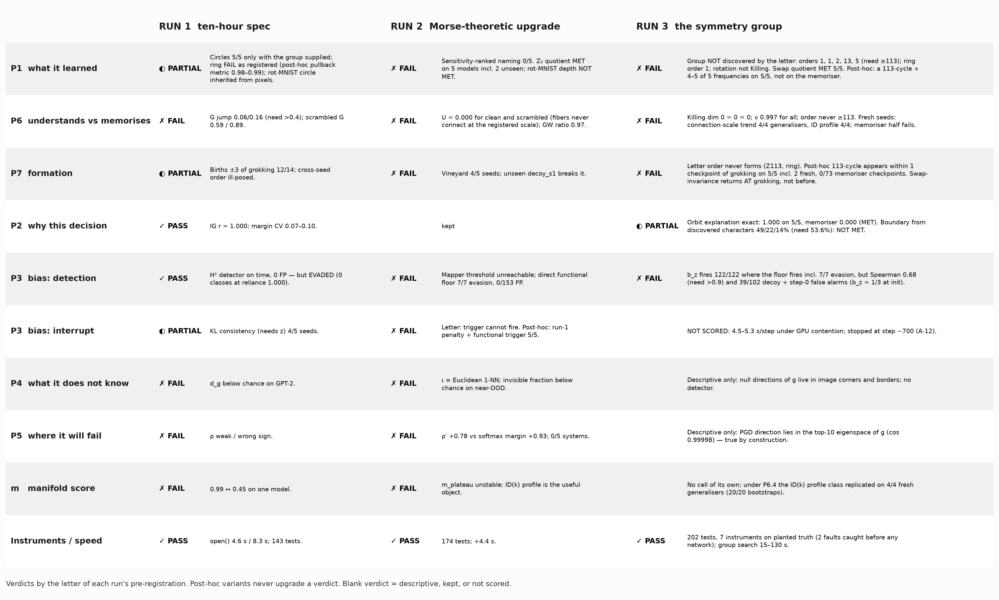
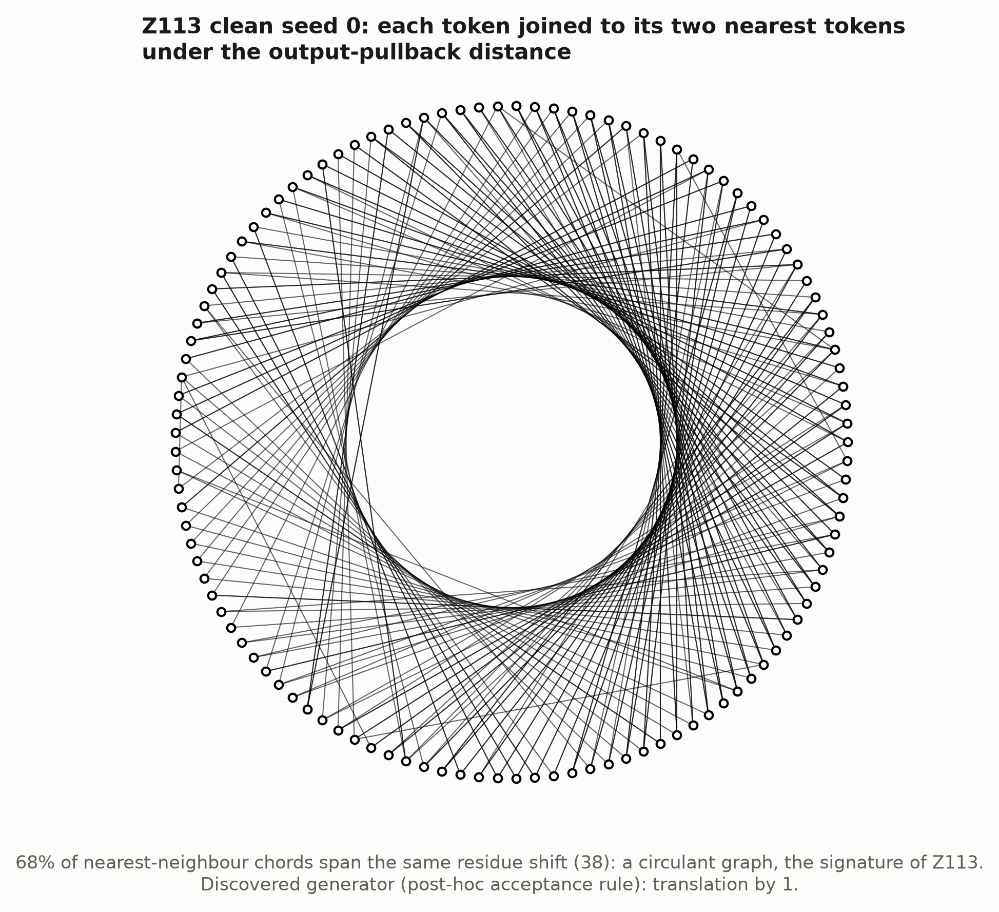
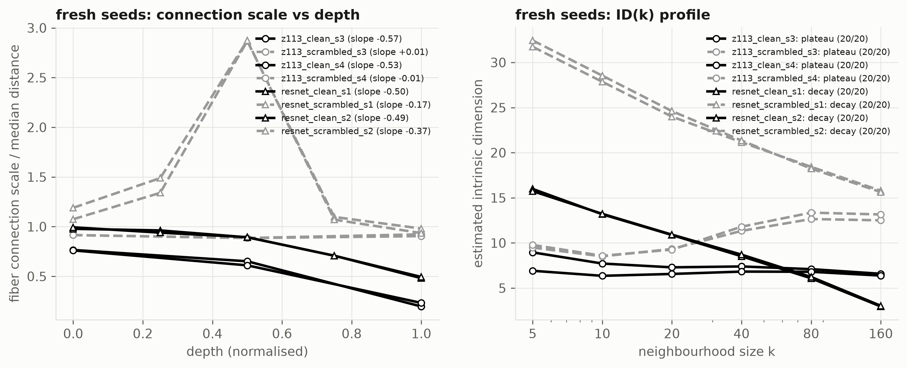
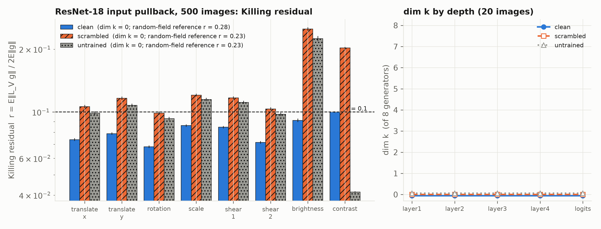
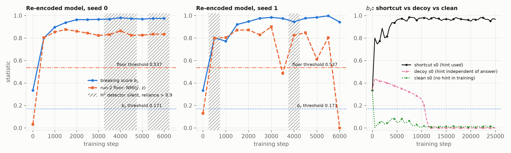
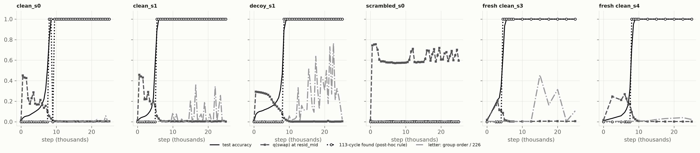

Run 3 pulled the output metric back to the input, g = JᵀJ, and asked three things of it: is the learned symmetry group discoverable without being supplied; is its size the difference between understanding and memorising; is a broken symmetry the definition of spurious structure. Every threshold was fixed in advance, every instrument verified on planted truth first, and the unseen models named before they were trained.
Said first, as the brief requires: by the letter, the group is not discoverable on Z113 without being supplied. Max-norm isometries of the output-pullback metric give groups of order 1, 1, 2, 13 and 5 on the five grokked models, where 113 was required. The ring RNN gives order 1. The Killing dimension is 0 for a clean, a label-memorising and an untrained ResNet-18 alike. None of the three definitions is supported as registered.
Why, and what is there instead. A trained network's symmetry is statistical, not entrywise: a true translation changes the distance matrix by 3% on average and by 14–42% in its worst entry. Read that way — post-hoc, labelled as such — a 113-cycle generator is recoverable from outputs alone on five of five generalisers and on no memoriser, it appears within one checkpoint of grokking, and the frequencies fall out of it. And two of run 2's after-the-fact observations replicated on fresh seeds.

| Run-3 cell | Pre-registered | Measured | Verdict |
|---|---|---|---|
| S · instruments | planted truth before networks; 200+ tests | 7 instruments verified, 2 faults caught there; 202 pass, 1 xfail | ✓ PASS |
| P1.1 · Z113 group | order ≥ 113 with a 113-cycle on ≥ 4/5; ≥ 4/5 frequencies from the discovered generator | orders 1, 1, 2, 13, 5; a letter generator on 2 models only | ✗ FAIL |
| P1.2 · memoriser | order ≤ 2 | 1 | ✓ met |
| P1.3 · ring | cyclic order ≥ 36 on 3/3 | 1, 1, 1 | ✗ FAIL |
| P1.4 · rot-MNIST | rotation Killing at conv layers; null at depth in the trained net only | residual 0.26–0.34 (need < 0.1); null criterion ill-posed | ✗ FAIL |
| P1.5 · swap quotient | q < 0.05 at the opened layer on 5/5 | 0.002–0.005; embedding 0.61–0.78; memoriser 0.58 | ✓ met |
| P6.1 / P6.2 | Killing dim clean ≥ scrambled + 2; ν̄ gap > 0.1 | 0 vs 0 (untrained 0); 0.997070 vs 0.997062 | ✗ FAIL |
| P6.3 · order across training | ≥ 113 within ±2 checkpoints of grokking | never, on seen or fresh clean seeds; memorisers ≤ 1 | ✗ FAIL |
| P6.4 · fresh seeds | connection-scale slope < −0.3 generalisers, > −0.1 memorisers; ID-profile classes, 18/20 bootstraps | generalisers 4/4 and 4/4; memorisers 2/4 and 0/2 | ◐ half |
| P3.1 · breaking score | Spearman with the floor > 0.9; fires wherever the floor fires; 0 false alarms | 0.68; 122/122 including 7/7 evasion; 39/102 decoy + every step 0 | ✗ FAIL |
| P3.3 · interrupt | 5/5 above 0.98, no re-firing | not scored: 4.5–5.3 s/step under GPU contention, stopped at step ~700 | — not scored |
| P7.1 / P7.3 | ring order forms with accuracy; decoy_s1 order ≥ 113 throughout | never; 16% of post-grok checkpoints | ✗ FAIL |
| P2.1 · orbit explanation | ≥ 99% orbit- and coset-constant on 5/5; memoriser < 60% | 1.000 ×5; memoriser 0.000 | ✓ met |
| P2.2 · boundary | top-3 shifts from discovered characters hold ≥ 53.6% | 49% / 22% / 14% | ✗ FAIL |
Stated in the pre-registration before anything was computed: under the output-pullback metric the distance between two tokens is built from the model's outputs on all 113 × 113 inputs, so any model that is right everywhere has a circulant distance matrix. The "group" is a property of the function. On the raw embedding rows nothing is found on any model (orders 1, 1, 1, 1, 3) — the embedding is not an isometric copy of Z113.
The registered tolerance was entrywise (10% of the median distance). A true translation passes that on average by a wide margin — 3% of the median, against 22% for the memoriser and 21–33% for a random relabelling — and fails it in the worst of 12,769 entries (14–42%). So the search verifies almost nothing. Two replacement statistics I wrote after seeing this were themselves wrong: a mean tolerance passes 804 permutations of an untrained model, and a chance-relative one passes 3,406 on the memoriser, because swapping two tokens barely moves a mean. Neither yields a group order. What carries information is whether a full 113-cycle is among the mean-accepted candidates: yes on 5 of 5 generalisers, no on the memoriser.
Ordering the tokens along that discovered generator and taking the Fourier transform of the embedding recovers 5, 4, 4, 4 and 4 of each model's five frequencies (r = 0.990–0.999, one at 0.35), under a single unit that is unique — 1 of 56 — and equal to the unit the generator itself implies. On the two decoy models the discovered generator is translation by 43⁻¹ and 42⁻¹, not by 1, and the frequencies line up only after that change of generator. This is the unsupervised naming that run 2 failed, by the group route — post-hoc, with a rule invented after the letter failed.

Not in any registered measure. The Killing algebra over eight image generators has dimension 0 for the clean, the label-memorising and the untrained ResNet-18; the null fraction of g is 0.997 for all three, as it must be for a ten-logit network on 3,072 pixels. Graded and post-hoc: clean training lowers every Killing residual relative to the other two (about 0.7× for the geometric warps), and lowers the photometric ones most — brightness 0.09 against 0.25, contrast 0.10 against 0.20 — while the memoriser sits at the untrained level. Its metric is also the most anisotropic (participation ratio 5.7, against 7.8 and 9.5).
What replicated on unseen models. Two observations run 2 made after the fact were pre-registered here on seeds that did not exist yet. The scale at which a class fiber becomes one piece falls with depth in all four fresh generalisers (slopes −0.57, −0.53, −0.50, −0.49; criterion < −0.3) and is flat in both fresh Z113 memorisers. The intrinsic-dimension profile is a plateau on both fresh grokked Z113 models and a decay on both fresh clean ResNet penultimate layers, 20 of 20 bootstraps each. The memoriser half of the criterion fails: fifteen epochs on random labels only reached 56–59% training accuracy, so the fresh ResNet "memorisers" are not memorisers, and the Z113 memorisers' dimension grows too slowly to be classed as growth.


The breaking score is the share of the input-pullback geometry that lies in the hint slot. It never misses: it fires on all 122 checkpoints where run 2's functional floor fires, including all seven where the H¹ detector had been evaded. It fails the other two clauses. It tracks the floor only loosely (rank correlation 0.68), and it false-alarms on 39 of 102 decoy checkpoints and on every model at step 0.
Both failures are informative. A randomly initialised network has three input slots and gives each a third of its geometry, which is above the registered threshold. And on the decoy models — hint present, uninformative — the score is 0.44–0.48 for the whole memorisation phase and collapses to 0.0004 exactly as the model groks. A memorising network keys on every token, the nuisance included. That is a genuinely broken symmetry and it is not the planted shortcut. The score is also infinitesimal and scale-free: a collapsed model with zero reliance scores 0.94, and a model with reliance 0.35 scores 0.0002 because its local derivative is flat. The functional floor from run 2, with no false alarms on the same 255 checkpoints, remains the better statistic. Both need to be told which input is the nuisance.
Exploratory, with the nuisance hidden: on both planted models the hint is the top eigen-direction of the averaged input-pullback metric (95–96% of its trace; under 1% on clean models). It is the first unsupervised handle on the nuisance in three runs, on two models, with no registered criterion.

By the letter nothing forms: the entrywise group order never approaches 226 on any checkpoint. Under the post-hoc full-cycle rule — fixed at 14:17, before the fresh seeds had finished training — the generator first appears at the grokking checkpoint or one either side of it on five of five generalisers (offsets 0, +1, 0, −1, 0), is present in 97–100% of later checkpoints, and appears in none of 73 memoriser checkpoints. On the model whose frequency circles were repeatedly knocked down in run 2, the generator is there at every one of those checkpoints: the symmetry is the invariant, the circle its shadow — on one model, post-hoc.
The brief predicted that swap-invariance precedes grokking. It does not. It is present at initialisation (q = 0.012–0.019: attention pooling at the read-off position is permutation-invariant up to small positional embeddings), is broken during memorisation (0.20–0.46; 0.58 in the memoriser) and is restored at the grokking checkpoint or one to two after it. Run 2 called the Z₂ quotient a learned invariance. The accurate statement is that generalisers keep a symmetry the architecture offers, and memorisers break it.

This one holds exactly. For every one of 2,000 random inputs on each of the five generalisers, the whole 113-element translation orbit under the discovered generator and the swap coset receive a single prediction; on the memoriser, none do. The explanation the brief asked for is a true statement about the model: "predicted 14; (5, 9) lies on the translation orbit {(5+s, 9−s)} and the swap coset {(5,9), (9,5)}, all mapped to the residue-14 fiber" — on the memoriser the same four inputs give 93, 12, 42 and 59. The caveat is arithmetic: a model that is right on all 12,769 inputs is orbit-constant under the true translation by definition; what the cell adds is that the generator came from the outputs. The boundary prediction recomputed from the discovered characters is weaker than run 1's (49%, 22%, 14% against 43%, 52%, 25%) and fails.
| What | Where (under ~/blindinglight) |
|---|---|
| Pre-registration, amendments | SPEC3.md · AMENDMENTS.md (A-7 … A-12) · brief docs/RUN3_BRIEF.md |
| All three scorecards | CLAIMS.md · figures/grid_three_runs.png |
| Pauses and findings | PAUSE3_0..3.md · FINDINGS_S, P1, P6, P3, P7, P2, IMG.md |
| Instruments | whiteboxtopo/metric · symmetry · symmetry_finite.py · symmetry_breaking.py · tests/test_run3_*.py |
| Numbers, fresh models, demo | results/run3/ · runs/r3_* · logs/demo_run3_transcript.txt |
| Earlier reports | report/whitebox-report.html · report/blinding-light-run2.html |